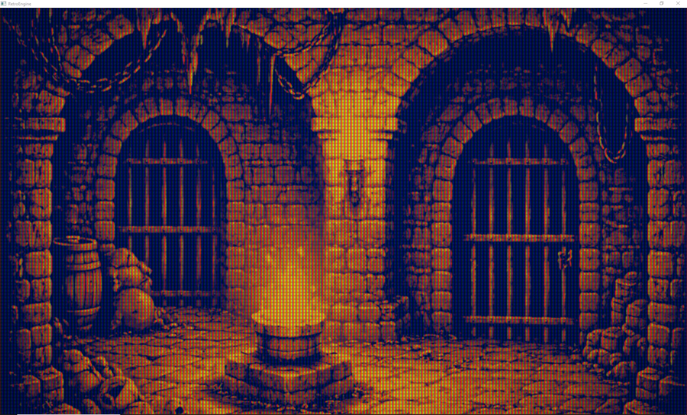
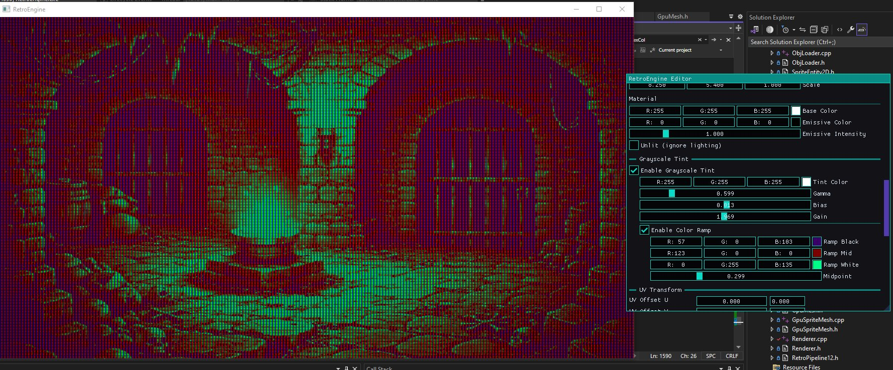

I Need Better Tools
Dev Log 11 was about stabilizing CRT persistence and getting the feedback loop under control. Once that was solved, I started building simple scenes for Dev Log 12 to show an overview of the project, and the renderer felt trustworthy again.
But immediately after that, a different kind of problem became obvious. I was spending too much time doing repetitive scene work.
Duplicating entities, tweaking the same settings over and over, and manually redoing small variations was slowing everything down. The engine could render what I wanted, but authoring scenes still felt like unnecessary friction.
This dev log is about some of my attempts to fix that. The goal was simple: make it faster to reuse what already works, and make iteration feel natural.
Grayscale Materials With Real Art Direction Controls
The first workflow upgrade was adding a grayscale material path that can be remapped into color. The core idea is that a texture does not have to ship with its final look baked in.
Instead, I can use a single grayscale texture as a stable input, then shape it into different outcomes directly in the editor. This means fewer texture variants, less reauthoring, and faster visual iteration.
The new controls are intentionally practical. They let me push tone and contrast, then steer the result into a palette, without needing to touch the source file.
Here is the current control set for the grayscale path, including tint, gamma, bias, and gain. There is also an optional color ramp for remapping black, mid, and white, with a midpoint control.

Two Outcomes From One Texture
The point of this system is leverage. One texture should be able to serve multiple needs, depending on the scene.
The controls let me treat grayscale as an authoring foundation. Then tint and remap become decisions that can change per object, per level, etc.
Below are two different outcomes driven by the same grayscale source. This is the kind of iteration speed I wanted.


Copy and Paste Attributes, Not Just Entities
Once materials gained more expressive controls, the next problem showed up fast. I needed a way to reuse work without rebuilding it.
Duplicating entities helps, but it is not always the right tool. A lot of the time, I only want to copy part of an entity, like its material settings, its transform, or its mesh binding.
So the editor now supports copying and pasting specific attribute sets. This makes reuse more intentional and reduces the chance of dragging extra state along by accident.
In practice, it means I can get one object looking right, then propagate that same setup to other objects in seconds.
Multi-Select Editing for Scene Scale Changes
Copy and paste solved part of the speed problem, but scene authoring still had a scale issue. Editing one entity at a time is fine early on, but it does not hold up once scenes grow.
The scene outliner now supports multi-select, and the inspector supports multi-edit for the relevant properties. That means I can make a single change and apply it across a whole set of entities at once.
This is the difference between tweaking and designing. When changes apply across a group, the scene starts to evolve as a composition instead of a pile of individual edits.
What This Enables: Faster Scene Iteration
None of these features exist for their own sake. They exist because I want to build scenes faster and iterate more freely.
Grayscale remapping cuts down on texture churn. Copy and paste reduces repetitive setup work. Multi-select editing makes scene-wide changes practical.
Together, these push the engine closer to what I actually need day to day. A tool that lets me reuse decisions and move quickly, without feeling like every change is expensive.
Next
With these editor upgrades in place, it is finally getting easier to build out small levels and visual tests without fighting the tooling. That matters because the next stage is less about rendering experiments and more about building actual game structure on top of a stable foundation.
The renderer still matters, but now the workflow matters just as much. This is the point where RetroEngine starts shifting from a graphics project into something I can build with consistently.